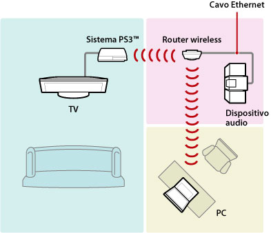
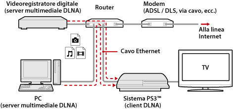
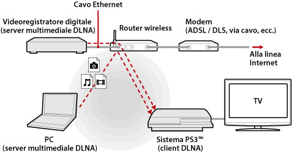
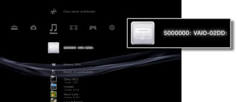
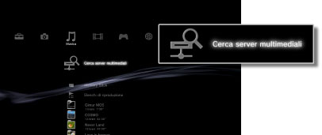

Impostazioni > Impostazioni di rete > Connessione al server multimediale
Connessione al server multimediale
Regolare le impostazioni per la connessione a dispositivi che supportano DLNA.
| Abilita | Consente il collegamento a dispositivi che supportano DLNA. |
|---|---|
| Disabilita | Non consente il collegamento a dispositivi che supportano DLNA. |
Informazioni su DLNA
DLNA (Digital Living Network Alliance) è uno standard che consente il collegamento a una rete di dispositivi digitali, quali personal computer, registratori di video digitale e televisori, e la condivisione dei dati sugli altri dispositivi connessi e compatibili con DLNA.
I dispositivi compatibili con DLNA svolgono due differenti funzioni. I "server" distribuiscono contenuti quali file di immagini, musica o video, mentre i "client" li ricevono e li riproducono. Alcuni dispositivi assolvono entrambe le funzioni. Utilizzando un sistema PS3™ come client, è possibile visualizzare le immagini o riprodurre file musicali o video memorizzati su un dispositivo con funzionalità di server multimediale DLNA su una rete.

Collegamento tra sistema PS3™ e server multimediale DLNA
Collegare il sistema PS3™ e il server multimediale DLNA utilizzando una connessione cablata o wireless.
Esempio di connessione a un personal computer via cavo

Esempio di connessione a un personal computer mediante connessione wireless

Configurazione di un server multimediale DLNA
Configurare il server DLNA per l'utilizzo da parte del sistema PS3™. I seguenti dispositivi possono essere utilizzati come server multimediali DLNA.
- Dispositivi che supportano lo standard DLNA, compresi prodotti di società diverse da Sony
- Personal computer (PC) con installato Windows Media Player 11
Se come server multimediale DLNA si utilizza un dispositivo AV
Abilitare la funzione server multimediale DLNA del dispositivo collegato per consentire l'accesso condiviso ai suoi contenuti. Il metodo di configurazione varia a seconda del dispositivo collegato. Per ulteriori informazioni, consultare le istruzioni in dotazione con il dispositivo.
Se come server multimediale DLNA si utilizza un computer Microsoft Windows
Un computer Microsoft Windows può essere utilizzato come server multimediale DLNA tramite le funzioni di Windows Media Player 11.
1. |
Lanciare Windows Media Player 11. |
|---|---|
2. |
Selezionare [Condivisione file multimediali] dal menu [Catalogo multimediale]. |
3. |
Selezionare [Condividi file multimediali]. |
4. |
Tra i dispositivi elencati sotto la casella di controllo [Condividi file multimediali], selezionare i dispositivi con i quali si desidera condividere dati, quindi selezionare [Consenti]. |
5. |
Selezionare [OK]. |
Note
- Windows Media Player 11 non è installato per impostazione predefinita su un personal computer Microsoft Windows. È possibile scaricare il programma di installazione dal sito Web di Microsoft per installare Windows Media Player 11.
- Per ulteriori informazioni sull'utilizzo di Windows Media Player 11, utilizzare la Guida in linea di Windows Media Player 11.
- In alcuni casi, sul computer potrebbe essere installato il software del server multimediale DLNA originale. Per ulteriori informazioni, consultare le istruzioni in dotazione con il computer.
Riproduzione dei contenuti del server multimediale DLNA
Quando si accende il sistema PS3™, vengono rilevati automaticamente i server multimediali DLNA presenti sulla stessa rete e in  (Foto),
(Foto),  (Musica) e
(Musica) e  (Video) vengono visualizzate le icone dei server rilevati.
(Video) vengono visualizzate le icone dei server rilevati.
1. |
Selezionare l'icona del server multimediale DLNA da collegare in  |
|---|---|
2. |
Selezionare il file da riprodurre. |
Note
- Il sistema PS3™ deve essere connesso a una rete. Per ulteriori informazioni sulle impostazioni di rete, vedere
 (Impostazioni) >
(Impostazioni) >  (Impostazioni di rete) > [Impostazioni della connessione Internet].
(Impostazioni di rete) > [Impostazioni della connessione Internet]. - Se nelle impostazioni per l'ambiente di rete il metodo di allocazione degli indirizzi IP è stato modificato da AutoIP a DHCP, eseguire una nuova ricerca di server in
 (Cerca server multimediali).
(Cerca server multimediali). - L'icona del server multimediale DLNA è visualizzata solamente quando [Connessione al server multimediale] è attivato in (Impostazioni) > (Impostazioni di rete).
- I nomi delle cartelle visualizzati variano a seconda del server multimediale DLNA.
- In base al server multimediale DLNA, alcuni file potrebbero non essere riprodotti oppure alcune operazioni eseguite durante la riproduzione potrebbero presentare limitazioni.
- Non è possibile riprodurre contenuto protetto da copyright.
- È possibile che i nomi file per i dati memorizzati su server non compatibili con DLNA siano seguiti da un asterisco. In alcuni casi, questi file non sono riproducibili sul sistema PS3™. Inoltre, anche se i file possono essere riprodotti sul sistema PS3™, potrebbe non essere possibile riprodurre i file su altri dispositivi.
- Per la riproduzione del contenuto video, potrebbe essere necessario collegare il sistema (serie CECH-4200 o successivo) mediante un cavo HDMI.
Ricerca manuale di server multimediali DLNA
È possibile iniziare la ricerca di server multimediali DLNA sulla stessa rete. Utilizzare questa funzione se all'accensione del sistema PS3™ non viene rilevato alcun server multimediale DLNA.
Selezionare (Cerca server multimediali) in (Foto), (Musica) o (Video). Quando vengono visualizzati i risultati della ricerca e si torna al menu XMB™, viene visualizzato un elenco di server multimediali DLNA che possono essere collegati.

Nota
(Cerca server multimediali) è visualizzato solamente quando l'opzione [Connessione al server multimediale] è attivata in (Impostazioni di rete) sotto (Impostazioni).